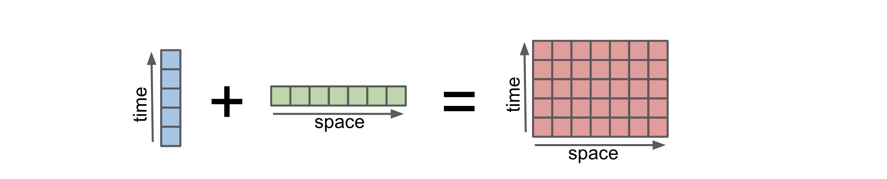
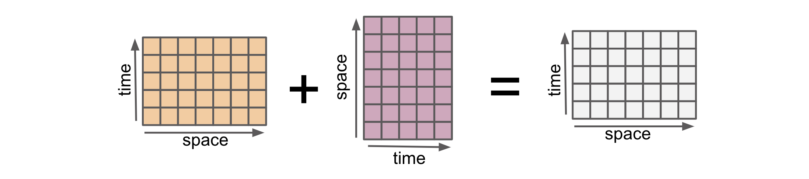

Computing with Multiple Objects
Contents
Computing with Multiple Objects#
Learning goals:
Perform operations across multiple datasets
Understand two important concepts: broadcasting and alignment.
import matplotlib.pyplot as plt
import numpy as np
import xarray as xr
%config InlineBackend.figure_format='retina'
plt.style.use("bmh")
np.random.seed(0)
Here is a motivating calculation where we subtract two DataArrays with data available at different locations in the (space, time) plane.
arr1 = xr.DataArray(
np.arange(12).reshape(3, 4),
dims=("space", "time"),
coords={"space": ["a", "b", "c"], "time": [0, 1, 2, 3]},
)
arr1
<xarray.DataArray (space: 3, time: 4)>
array([[ 0, 1, 2, 3],
[ 4, 5, 6, 7],
[ 8, 9, 10, 11]])
Coordinates:
* space (space) <U1 'a' 'b' 'c'
* time (time) int64 0 1 2 3arr2 = xr.DataArray(
[0, 1],
dims="space",
coords={"space": ["b", "d"]},
)
arr2
<xarray.DataArray (space: 2)> array([0, 1]) Coordinates: * space (space) <U1 'b' 'd'
Note that arr1 is 2D; while arr2 is 1D along space and has values at two locations only.
Now subtract the two.
arr1 - arr2
<xarray.DataArray (space: 1, time: 4)> array([[4, 5, 6, 7]]) Coordinates: * space (space) <U1 'b' * time (time) int64 0 1 2 3
To understand this output, we must understand two fundamental concepts underlying computation with Xarray objects
Broadcasting: The objects need to have compatible shapes.
Alignment: The objects need to have values at the same coordinate labels
Broadcasting: adjusting arrays to the same shape#
Broadcasting allows an operator or a function to act on two or more arrays to operate even if these arrays do not have the same shape. That said, not all the dimensions can be subjected to broadcasting; they must meet certain rules. The image below illustrates how an operation on arrays with different coordinates will result in automatic broadcasting

Credit: Stephan Hoyer – xarray ECMWF Python workshop
Numpy’s broadcasting rules, based on array shape, can sometimes be difficult to understand and remember. Xarray does broadcasting by dimension name, rather than array shape. This is a huge convenience.
Here are two 1D arrays
array1 = xr.DataArray(
np.arange(3),
dims="space",
coords={"space": ["a", "b", "c"]},
name="array1",
)
array2 = xr.DataArray(
np.arange(4),
dims="time",
coords={"time": [0, 1, 2, 3]},
name="array2",
)
display(array1)
display(array2)
<xarray.DataArray 'array1' (space: 3)> array([0, 1, 2]) Coordinates: * space (space) <U1 'a' 'b' 'c'
<xarray.DataArray 'array2' (time: 4)> array([0, 1, 2, 3]) Coordinates: * time (time) int64 0 1 2 3
Let’s subtract the two:
array1 - array2
<xarray.DataArray (space: 3, time: 4)>
array([[ 0, -1, -2, -3],
[ 1, 0, -1, -2],
[ 2, 1, 0, -1]])
Coordinates:
* space (space) <U1 'a' 'b' 'c'
* time (time) int64 0 1 2 3We see that the result is a 2D array.
When subtracting, Xarray first realizes that array1 is missing the dimension time and array2 is missing the dimension space. Xarray then broadcasts or “expands” both arrays to 2D with dimensions space, time. Here is an illustration:
While this detail is hidden, we can explicitly broadcast any number of arrays against each other using xr.broadcast
array1_broadcasted, array2_broadcasted = xr.broadcast(array1, array2)
display(array1_broadcasted.dims)
display(array2_broadcasted.dims)
('space', 'time')
('space', 'time')
To get the final anomaly, Xarray calculates
# identical to array1 - array2
array1_broadcasted - array2_broadcasted
<xarray.DataArray (space: 3, time: 4)>
array([[ 0, -1, -2, -3],
[ 1, 0, -1, -2],
[ 2, 1, 0, -1]])
Coordinates:
* space (space) <U1 'a' 'b' 'c'
* time (time) int64 0 1 2 3Broadcasting in numpy#
For contrast let us examine the pure numpy version of this calculation. We use .data to extract the underlying numpy array object.
array1.data - array2.data
---------------------------------------------------------------------------
ValueError Traceback (most recent call last)
Input In [9], in <cell line: 1>()
----> 1 array1.data - array2.data
ValueError: operands could not be broadcast together with shapes (3,) (4,)
To get this calculation to work, we need to insert new axes manually using np.newaxis.
array1.data[:, np.newaxis] - array2.data[np.newaxis, :]
array([[ 0, -1, -2, -3],
[ 1, 0, -1, -2],
[ 2, 1, 0, -1]])
Because xarray knows about dimension names we avoid having to create unnecessary
size-1 dimensions using np.newaxis or .reshape. This is yet another example where the metadata (dimension names) reduces the mental overhead associated with coding a calculation
For more, see the Xarray documentation and the numpy documentation on broadcasting.
Exercise#
Consider the following 2D array. What are the dimensions of array - array.mean("time")?
array = xr.DataArray(
np.arange(12).reshape(3, 4),
dims=("space", "time"),
coords={"space": ["a", "b", "c"], "time": [0, 1, 2, 3]},
name="array",
)
(array - array.mean("time")).dims
('space', 'time')
Alignment: putting data on the same grid#
When combining two input arrays using an arithmetic operation, both arrays must first be converted to the same coordinate system. This is “alignment”.

Here are two 2D DataArrays with different shapes.
arr1 = xr.DataArray(
np.arange(12).reshape(3, 4),
dims=("space", "time"),
coords={"space": ["a", "b", "c"], "time": [0, 1, 2, 3]},
)
arr1
<xarray.DataArray (space: 3, time: 4)>
array([[ 0, 1, 2, 3],
[ 4, 5, 6, 7],
[ 8, 9, 10, 11]])
Coordinates:
* space (space) <U1 'a' 'b' 'c'
* time (time) int64 0 1 2 3arr2 = xr.DataArray(
np.arange(14).reshape(2, 7),
dims=("space", "time"),
coords={"space": ["b", "d"], "time": [-2, -1, 0, 1, 2, 3, 4]},
)
arr2
<xarray.DataArray (space: 2, time: 7)>
array([[ 0, 1, 2, 3, 4, 5, 6],
[ 7, 8, 9, 10, 11, 12, 13]])
Coordinates:
* space (space) <U1 'b' 'd'
* time (time) int64 -2 -1 0 1 2 3 4arr1 and arr2 have the same dimensions (space, time) but have values at different locations in the (space, time) plane with some locations in common.
Note
xarray assumes coordinate labels are in the same coordinate system such that space=’b’ in arr1 is the same as space=’b’ in arr2. For more sophisticated handling of coordinate systems see rioxarray
def visualize_mesh(array, *args, ax=None, **kwargs):
"""Visualizes array's mesh ((points at which values are present)."""
# Use broadcast to generate 2D x_, y_ arrays from the 1D x,y arrays
space_, time_ = xr.broadcast(array.space, array.time)
if ax is None:
ax = plt.gca()
kwargs.setdefault("fillstyle", "none")
kwargs.setdefault("markersize", 10)
ax.plot(space_.data.ravel(), time_.data.ravel(), *args, **kwargs)
ax.set_xlabel("space")
ax.set_ylabel("time")
visualize_mesh(arr1, "<")
visualize_mesh(arr2, ">")
plt.ylim([-3, 6])
plt.legend(["arr1", "arr2"]);
We see that both arrays only have values in common at x="b" and y=[0, 1, 2, 3]. Before applying an arithmetic operation we must first modify each DataArray so that they have values at the same points. This is “alignment”.
Controlling alignment#
We can explicitly align objects using xr.align. The key decision to make is how to decide which points must be kept. The other way to think of alignment is that objects must be converted to a common grid prior to any operation combining multiiple objects. This decision is controlled by the "join" keyword argument. Xarray provides 5 ways to convert the coordinate labels of multiple Datasets to a common grid. This terminology originates in the database community.
join="inner"or reindex to the “intersection set” of coordinate labelsjoin="outer"or reindex to the “union set” of coordinate labelsjoin="left"or reindex to the coordinate labels of the leftmost objectjoin="right"or reindex to the coordinate labels of the rightmost objectjoin="exact"checks for exact equality of coordinate labels before the operation.
First lets try an inner join. This is the default for arithmetic operations in Xarray. We see that the result has values for locations that arr1 and arr2 have in common: x="b" and y=[0, 1, 2, 3]. Here is an illustration
a1_aligned, a2_aligned = xr.align(arr1, arr2, join="inner")
a1_aligned
<xarray.DataArray (space: 1, time: 4)> array([[4, 5, 6, 7]]) Coordinates: * space (space) <U1 'b' * time (time) int64 0 1 2 3
a2_aligned
<xarray.DataArray (space: 1, time: 4)> array([[2, 3, 4, 5]]) Coordinates: * space (space) <U1 'b' * time (time) int64 0 1 2 3
Here’s a visual depiction of all the join options
def visualize_join(a1, a2, join, ax=None):
a1_aligned, a2_aligned = xr.align(arr1, arr2, join=join)
visualize_mesh(a1, "<", ax=ax)
visualize_mesh(a2, ">", ax=ax)
visualize_mesh(a1_aligned, ".", markersize=32, color="C3", ax=ax)
ax.set_ylim([-3, 6])
ax.set_title(f"join={join!r}")
f, ax = plt.subplots(1, 4, sharex=True, sharey=True)
for axx, join in zip(ax, ["inner", "outer", "left", "right"]):
visualize_join(arr1, arr2, join, ax=axx)
ax[-1].legend(["arr1", "arr2", "after align"], bbox_to_anchor=(1, 1))
f.set_size_inches(10, 4);
Exercise Consider the following two arrays. Write down the x and y coordinate locations for da1 - da2
da1 = xr.DataArray(
np.arange(12).reshape(3, 4),
dims=("space", "time"),
coords={"space": ["a", "b", "c"], "time": [0, 1, 2, 3]},
)
da2 = xr.DataArray(
[0, 1],
dims="space",
coords={"space": ["b", "d"]},
)
Answer x = ["b"], y=[0, 1, 2, 3] . da2 has been broadcasted to 2D (so dimension “y” has been inserted) and the two arrays are aligned using join="inner" prior to subtraction.
Further control over alignment#
Controlling the fill value#
For all join options other than "inner" Xarray will insert a fill_value at locations not present in the original dataset. By default this is NaN
arr1_aligned, _ = xr.align(arr1, arr2, join="outer")
arr1_aligned
<xarray.DataArray (space: 4, time: 7)>
array([[nan, nan, 0., 1., 2., 3., nan],
[nan, nan, 4., 5., 6., 7., nan],
[nan, nan, 8., 9., 10., 11., nan],
[nan, nan, nan, nan, nan, nan, nan]])
Coordinates:
* space (space) <U1 'a' 'b' 'c' 'd'
* time (time) int64 -2 -1 0 1 2 3 4Control the “fill value” by specifying the fill_value keyword argument
arr1_aligned, _ = xr.align(arr1, arr2, join="outer", fill_value=0)
arr1_aligned
<xarray.DataArray (space: 4, time: 7)>
array([[ 0, 0, 0, 1, 2, 3, 0],
[ 0, 0, 4, 5, 6, 7, 0],
[ 0, 0, 8, 9, 10, 11, 0],
[ 0, 0, 0, 0, 0, 0, 0]])
Coordinates:
* space (space) <U1 'a' 'b' 'c' 'd'
* time (time) int64 -2 -1 0 1 2 3 4Checking that objects are aligned#
join="exact" is special in that it checks to make sure that the objects are aligned.
For arr1 and arr2 this will raise an error since arr1.x is not identical to arr2.x (and similarly for y)
xr.align(arr1, arr2, join="exact")
---------------------------------------------------------------------------
ValueError Traceback (most recent call last)
Input In [22], in <cell line: 1>()
----> 1 xr.align(arr1, arr2, join="exact")
File /usr/share/miniconda3/envs/xarray-tutorial/lib/python3.10/site-packages/xarray/core/alignment.py:324, in align(join, copy, indexes, exclude, fill_value, *objects)
316 if (
317 any(
318 not matching_indexes[0].equals(other)
(...)
321 or dim in unlabeled_dim_sizes
322 ):
323 if join == "exact":
--> 324 raise ValueError(f"indexes along dimension {dim!r} are not equal")
325 joiner = _get_joiner(join, type(matching_indexes[0]))
326 index = joiner(matching_indexes)
ValueError: indexes along dimension 'space' are not equal
Controlling automatic alignment#
Xarray’s default for arithmetic operations is join="inner". This is controllable using the xr.set_options context manager
with xr.set_options(arithmetic_join="outer"):
result = arr1 - arr2
result
<xarray.DataArray (space: 4, time: 7)>
array([[nan, nan, nan, nan, nan, nan, nan],
[nan, nan, 2., 2., 2., 2., nan],
[nan, nan, nan, nan, nan, nan, nan],
[nan, nan, nan, nan, nan, nan, nan]])
Coordinates:
* space (space) <U1 'a' 'b' 'c' 'd'
* time (time) int64 -2 -1 0 1 2 3 4